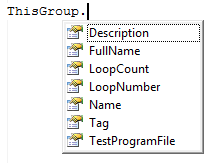
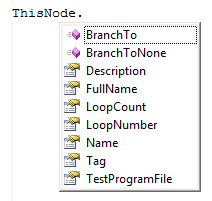

Using the FullName property in test "t4": TraceLog.WriteLine thisGroup.FullName
Result:
g1.g2
When writing test programs in the ActivATE™ environment, it may be helpful to know that there are some predefined objects and methods that can be used to benefit the user. The following is a list of the available items:
Application Provides access to general properties for the ActivATE™ application. MyDir The path of the current test program directory. Results Provides access to the properties for the test results. Sequencer Controls the test program flow. SharedMemory Exposes the SharedMemory object. Same as Application.SharedMemory. Sleep Adds a delay for the specified number of milliseconds. SlotID The slot number. (same as TIU) TIU The Test Interface Unit number. (same as SlotID) ThisGroup Provides access to the properties for the active group node. ThisNode Provides access to the properties for the active test node. TraceLog Provides access to the Script Trace Log window and trace file.
Application.Path Gets the path of the ActivATE.exe file (ex: "C:\Program Files\ActivATE\ActivATE 3.x") Application.ID Retrieves the current user. Application.Version Gets the full version of the ActivATE™ application (ex: "3.3.0.4") Application.SharedMemory Gets access to the Shared Memory object. This is static global memory. Test programs can read and write to this memory as a thread-safe mechanism to exchange data. Data types of any object are allowed (Integer, float, double, string, arrays, classes, etc). Shared memory is limited to 100 objects. This limit is not a system limitation but rather a limitation to prevent memory overflow. SharedMemory.Clear Clears all shared memory variables and removes them from the SharedMemory object list. SharedMemory.RemoveVar Removes the shared memory variable from Shared Memory. Example VBScript Call Call SharedMemory.RemoveVar("MyFlag")
SharedMemory.GetVar Allows the test get a named shared memory variable. Example VBScript call: If CInt(SharedMemory.GetVar("MyFlag") > 4) Then
Exit Function
End IfSharedMemory.SetVar Allows the test program to set a named shared memory variable. Example VBScript call
nCntr = nCntr + 1
Call SharedMemory.SetVar("MyFlag",nCntr)
Provides the full path of the current test program directory, excluding the test program file name.
Example. Assume the currently executing test program is located at C:\Program Files\ActivATE\ActivATE 3.x\Test Programs\Demo\ActivATE Demo.seq. A VBScript call would be:
TraceLog.WriteLine MyDir
The output of the above statement in the Trace Log window will be "C:\Program Files\ActivATE\ActivATE 3.x\Test Programs\Demo".
See Test Results File and Test Results Properties
Sequencer.BranchUnconditionally True/False Condition - If True, BranchOnFail node willl always take precedence over programmatic branching (ThisNode.BranchTo()). If False, then programmatic branching takes precedence over BranchOnFail flag (if set). Sequencer.ConsoleDebug Allows any and all test programs to simulataneously write to the same debug print output window Debug Output Window MUST be visible (see main menu item "View") -else these statements are ignored. Example C# call:
Sequencer.ConsoleDebug("Debug statement");Sequencer.NodeEnable Allows the programmatic control of enabling or disabling test and group nodes. This is hierarchical. If a Group node is disabled (or enabled) all child nodes are affected. Nodes are fully qualified paths, separated with a dot (.) Use TRUE to enable a node (the default) and FALSE to disable the node. Programmatic control of enabling and disabling nodes DO NOT PERSIST when the file is closed. Example call: ' Disable node "G2.T5"
Call sequencer.NodeEnable(false, "G2.t5")Sequencer.Failed True/False condition - If true, indicates the test program has failed at least one test node. Sequencer.RequestToStop True/False Condition - If True, a "controller" is requesting the test program to stop. This is a read-only flag this is set using Sequencer.SoftAbort(). Sequencer.SoftAbort When called, sets RequestToStop to True. Sequencer.Stop Stops the test program execution after the current node is completed. (Same as clicking the stop button.) Sequencer.Terminating True/False condition - If true, indicates the test sequencer will stop the test after executing the current node. Sequencer.TestProgramFile Gets the full path (directory and file name) of the test program. Sequencer.TestProgramName Gets the name of the test program. Sequencer.TestProgramVersion Gets or sets the test program version. This property is a string so the version can be in any format you choose. The default value is "1.0.0" when a new test program is created. VBScript Examples:
Failed
if Sequencer.Failed then
tracelog.WriteLine "A Test Node Failed"
end if
Stop
if <condition> then
Sequencer.Stop
end if
Terminating (Exiting a loop)
The test program will check to see if the terminate flag has been set. This flag gets set as soon as the "STOP" button is pressed on an executing test program. Note: For any and all loops of any count, the Sequencer.Terminating flag should be checked to make sure infinite loops are not executed.
VBScript Example:
do <something>
if Sequencer.Terminating = true then exit do
loop
CScharp Example: Note that when looping, it is very easy to get stuck in a loop with no exit criteria. Here's an example of loopoing forever in C# (this is a bad thing).
do
{
TraceLog.WriteLine ("Looping
Forever...");
} while (true);
What develpers should use, is:
do
{
TraceLog.WriteLine ("Looping
Forever...");
// This
will loop really fast, so use a small delay
System.Threading.Thread.Sleep(1000);
if
(Sequencer.Terminating == true)
break;
} while
(true);
void Sleep (int timeout) (VBScript Only)
timeout
[in] Specifies the amount of time to sleep for, in
milliseconds.
Allows the user to add a delay to the test program by suspending the test program thread for the specified time.
Example:
Sleep(5000) ' Sleep for 5 sec
Gets the test interface unit or slot number that the current test program is executing on. The ActivATE software supports up to 36 concurrent test programs, so this property will return a number between 1 and 36.
Example:
If the test program is running on TIU 7, the output of both statements below will be "7".
TraceLog.WriteLine TIUTraceLog.WriteLine
SlotID
When writing a test program, use the object "thisGroup" to get or set different properties of the group node that is the direct parent of the current test node. It can only be used within a test node's function that is contained within a group node. It cannot be used in the pre/post subroutines for a group node or in the function for a test node that is a direct child of the root node.

| Description | Gets/sets the description of the current test program group. |
| FullName | Gets the full name of the node including its parent groups. |
| LoopCount | Gets/Sets the number of times to loop on the current group. |
| LoopNumber | Gets/Sets the current loop number the test program group is on. |
| Name | Gets the name of the test program group. |
| Tag | Gets/Sets a user-defined string for the test program group. |
| TestProgramFile | Gets the full path of the test program file. |
Tip: If a user wants the group node to stop looping before the LoopNumber reaches the number set for LoopCount, set the LoopCount and LoopNumber equal to each other in the test program.
Example:
LoopCount and LoopNumber
|
---- This will stop the loop once the condition becomes true, however, if the test program is saved after this condition has been true, the LoopCount will be reset to the LoopNumber. This is not recommended because a user is least likely to want to reset a LoopCount that has been set in the properties. It is suggested that the first example be used.
|
FullName
Using the FullName property in test "t4": TraceLog.WriteLine thisGroup.FullName
Result:
g1.g2
When writing a test program, use the object "thisNode" to get or set different properties of the test program node. If used within a group node's pre and/or post subroutines, "thisNode" refers to that group node. If used within a test node's function, "thisNode" refers to that test node.

| BranchTo | Allows programmatic flow control. The branch node is
unconditional. Branch nodes are fully qualified nodes including
groups, separated by a dot ('.'). Example:
' Branch unconditionally to T4 If the node does not exist, -1 is returned. If the node exists, zero is returned. |
| BranchToNone | Clears the branch node. Example:
' Cancel any preceding branch node. |
| Description | Gets/Sets the description of the current test program node. |
| FullName | Gets the full name of the node including its parent groups or nodes. |
| LoopCount | Gets/Sets the number of times to loop on the current node. |
| LoopNumber | Gets/Sets the current loop number the test program node is on. |
| Name | Gets the name of the test program node. |
| Tag | Gets/Sets a user-defined string for the test program node. |
| TestProgramFile | Gets the full path of the test program file. |
Tip: If a user wants the test node to stop looping before the LoopNumber reaches the number set for LoopCount, set the LoopCount and LoopNumber equal to each other in the test program.
Examples:
LoopCount and LoopNumber
|
---- This will stop the loop once the condition becomes true, however, if the test program is saved after this condition has been true, the LoopCount will be reset to the LoopNumber. This is not recommended because a user is least likely to want to reset a LoopCount that has been set in the properties. It is suggested that the first example be used.
|
FullName
Using the FullName property in test "t4": TraceLog.WriteLine thisNode.FullName
Result:
g1.g2.t4
See Using the Tracelog Object.
EADS North America Test and Services
Last updated on 11/18/14 by M. Buccat